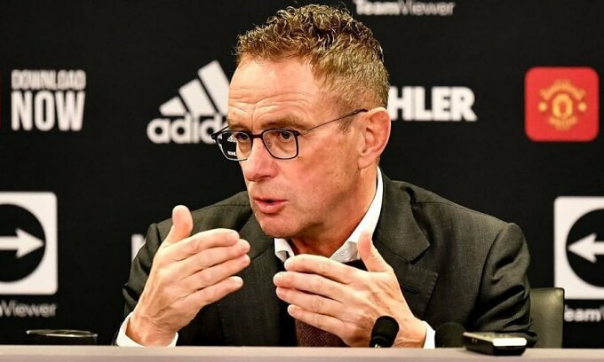
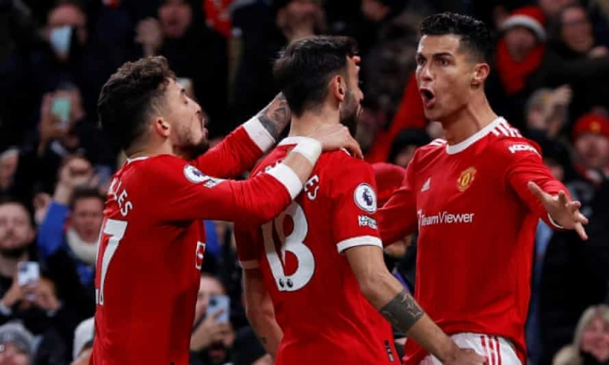

Rangnick: 'Cầu thủ Man Utd cần tin tưởng tôi'
Thứ sáu, 3/12/2021, 18:19 (GMT+7)ANH - Trong họp báo ra mắt Man Utd hôm 3/12, HLV Ralf Rangnick nói rằng mọi cầu thủ phải thi đấu vì tập thể, dù là Cristiano Ronaldo hay ai khác.
- Vì sao ông từ chối Chelsea nhưng lại chọn Man Utd?
- Khi sa thải Frank Lampard, Chelsea liên hệ với tôi nhưng họ chỉ nói về hợp đồng bốn tháng, chứ không nói về tương lai dài hơn. Còn Man Utd đưa ra đề nghị để tôi làm cố vấn trong hai năm, sau khi hết hợp đồng sáu tháng rưỡi. Khi được một CLB như Man Utd liên hệ, tôi không thể từ chối.

- Ông đánh giá thế nào về trận thắng Arsenal tối 2/12?
- Dĩ nhiên tôi đã xem mọi trận đấu gần đây của Man Utd, ngay cả trước khi được CLB liên hệ. Tôi nhận thức khá rõ những gì đang xảy ra với đội bóng ở Ngoại hạng Anh. Rõ ràng Man Utd có rất nhiều cầu thủ tài năng. Mục tiêu của tôi là đem lại sự cân bằng hơn cho đội bóng. Hôm qua chúng tôi đã thủng lưới hai bàn, nên cần ghi tới ba bàn mới thắng. Chúng tôi thủng lưới quá nhiều, nên cách tiếp cận của tôi là giúp đội cân bằng hơn.
Trận đấu với Arsenal rất thú vị với người hâm mộ. Nhưng với tư cách HLV, tôi không muốn những màn trình diễn như thế xuất hiện mỗi tuần. Tôi sẽ cố gắng giúp đỡ những cầu thủ tài năng xuất chúng này.
Hiệp một đội chơi khá tệ. Bàn thua sớm có phần thiếu may mắn. Trọng tài đã không quan sát thấy David de Gea ở đâu trong khung thành. Ngay cả tôi cũng nghĩ: "David đâu rồi?". VAR đã công nhận bàn cho Arsenal và điều đó khiến cầu thủ Man Utd thiếu tự tin. Nhưng quan trọng là đội đã gỡ hoà trước khi hiệp một kết thúc.
- Đây có phải thử thách khó khăn nhất sự nghiệp của ông?
- Đây là đội bóng lớn nhất, với thử thách khổng lồ. Tôi đã làm việc cùng những ngôi sao hàng đầu khác, tương tự như khi dẫn Schalke 04. Tôi còn hạnh phúc hơn khi được làm việc cùng nhóm cầu thủ Man Utd lúc này.
- Mục tiêu của ông là gì?
- Đầu tiên là chiến thắng. Tôi sẽ giới thiệu về bản thân với các cầu thủ trong buổi tập 15h chiều nay (22h giờ Hà Nội). Tôi sẽ cho họ biết phương pháp tiếp cận trận đấu ra sao. Tôi có đủ kinh nghiệm để hiểu rằng không thể thay đổi mọi thứ ở đội bóng vào giữa mùa giải. Tôi rất tham vọng, muốn thắng các trận đấu. Chúng tôi muốn tạo ra mùa giải thành công nhất có thể, nhưng vẫn phải thực tế. Vẫn còn koảng cách giữa chúng tôi với ba CLB hàng đầu Ngoại hạng Anh. Nhưng tôi có thể nhận ra tiềm năng của đội bóng này.
Ban lãnh đội và tôi có chung quan điểm, vì thế công tác quản lý sẽ không có nhiều thay đổi. Đội hình hiện tại đủ sức chiến đấu ở cấp độ cao nhất. Ba đội hàng đầu đang rất ổn định, với HLV tài ba. Chúng tôi phải phấn đấu hơn nữa. Khi Jurgen Klopp đến Liverpool, đội hình mà ông ấy kế thừa không mạnh hơn những gì tôi đang có ở Man Utd.

- Ông có mua thêm cầu thủ trong tháng 1/2022 không?
- Đây không phải lúc để nói về cầu thủ mới. Chúng tôi phải tìm hiểu cặn kẽ về đội hình hiện tại. Số lượng cầu thủ chắc chắn không quá ít. Sau Giáng sinh, chúng tôi sẽ có thời gian để nói về cầu thủ mới. Nhưng mùa đông không phải thời điểm tốt nhất để mua cầu thủ.
- Man Utd có vấn đề về bản sắc không?
- Chúng tôi chỉ có thể tiến bộ theo từng trận, từng bước. Bất cứ khi nào tôi đến một CLB vào giữa mùa giải, tôi phải đảm bảo rằng đội bóng có cơ hội lớn nhất để thắng trận tiếp theo. Các cầu thủ phải tin tưởng tôi và hiểu rằng cần phải chơi như thế nào trong tương lai.
Pep Guardiola mất ba năm để đem thành công về cho Man City. Jurgen mất ba, bốn năm ở Liverpool. Họ đều đi trước chúng tôi một chút. Tôi rất hạnh phúc với chất lượng cầu thủ Man Utd hiện tại. Chúng tôi muốn thực hiện các bước tiếp theo.
Theo báo vnexpress.net
Tin tức liên quan
Được xem nhiều nhất
-
 Hùng Dũng lỡ hẹn AFF Cup 2021
Hùng Dũng lỡ hẹn AFF Cup 2021
Hùng Dũng chính thức không thể lên đường sang Singapore để hội quân cùng các đồng đội.
-
 Djokovic thua bán kết Davis Cup
Djokovic thua bán kết Davis Cup
Tay vợt số một thế giới Novak Djokovic thua trận đôi quyết định, dừng bước ở bán kết Davis Cup trước Croatia hôm 3/12.
-
 HLV Park: 'Không khí ở đội hiện chưa tốt'
HLV Park: 'Không khí ở đội hiện chưa tốt'
HLV Park Hang-seo thừa nhận Việt Nam chịu nhiều áp lực trước thềm AFF Cup 2020.
-
 Rangnick lần đầu chỉ đạo Man Utd cuối tuần này
Rangnick lần đầu chỉ đạo Man Utd cuối tuần này
Tiếp Crystal Palace sẽ là thử thách đầu tiên với Ralf Rangnick trên cương vị HLV tạm quyền trong sáu tháng của Man Utd.
-
 HRangnick: 'Cầu thủ Man Utd cần tin tưởng tôi'
HRangnick: 'Cầu thủ Man Utd cần tin tưởng tôi'
Trong họp báo ra mắt Man Utd hôm 3/12, HLV Ralf Rangnick nói rằng mọi cầu thủ phải thi đấu vì tập thể.